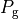
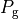

大局的なブラックホール降着円盤での磁気回転不安定性とジェット形成¶
- 著者
川島朋尚（国立天文台）、 町田真美（九州大学）
背景¶
ブラックホール候補天体からは、高光度の様々な波長の輻射に加え、しばしばアウトフローやジェットの様な高速のプラズマ噴出流が観測されている。これらの輻射やプラズマ噴出は、ブラックホール周りに形成される回転プラズマ（降着円盤）による重力エネルギーの解放により可能になる。
ブラックホール候補天体では様々な輻射スペクトル状態が観測されており（例：明るく輻射スペクトルが柔らかいHigh/Soft状態や、暗くスペクトルが硬い Low/Hard状態）、それに対応し様々なタイプの降着円盤が考案されてきた。例えば、標準円盤と呼ばれる幾何学的に薄く光学的に厚い円盤（ Shakura & Sunyaev, 1973 ）は、High/Soft状態の輻射スペクトルを良く説明できるが、Low/Hard状態のスペクトルは再現できない。Low/Hard状態は Ichimaru (1977) により考案され Narayan and Yi (1994, 1995) により再発見されたれた放射不良降着流(Radiatively Inefficient Accretion Flow, 以下RIAF)により説明できる。輻射スペクトル状態の違いはジェットの噴出にも関連がある。Low/Hard状態ではジェットの噴出が観測されているが、High/Soft状態ではジェットの噴出は検出されていない（ Fender et al., 2004 ）。
この演習では、RIAFのシミュレーションを実施する。
磁場の役割¶
降着円盤においては、磁場は角運動量輸送やジェットの形成といった非常に重要な役割を持つ。以下に、その役割について見ていく。
まず、回転プラズマの流体素片を考える。ブラックホールへと降着していく過程で流体素片の角運動量  が保存しているとすると、遠心力の大きさは で重力の大きさは であるため(
が保存しているとすると、遠心力の大きさは で重力の大きさは であるため(  は中心天体からの距離、
は中心天体からの距離、 は重力定数、
は重力定数、  は中心天体の質量)、やがて遠心力は重力と釣り合うまで大きくなり、ある半径でケプラー回転となる。この半径よりも内側へとガスが降着するためには、角運動量を外側へと輸送する必要がある。この輸送過程は長いあいだ謎であり現象論的な粘性モデルである
は中心天体の質量)、やがて遠心力は重力と釣り合うまで大きくなり、ある半径でケプラー回転となる。この半径よりも内側へとガスが降着するためには、角運動量を外側へと輸送する必要がある。この輸送過程は長いあいだ謎であり現象論的な粘性モデルである  粘性が用いられてきたが、1990年代になると磁気回転不安定性(Magneto-Rotational Instability, 以下MRI)によって生じる磁気乱流のマクスウェル応力によって角運動量輸送が起きることが Balbus & Hawley (1991) ; Hawley & Balbus (1992) によって再発見された 1 。
粘性が用いられてきたが、1990年代になると磁気回転不安定性(Magneto-Rotational Instability, 以下MRI)によって生じる磁気乱流のマクスウェル応力によって角運動量輸送が起きることが Balbus & Hawley (1991) ; Hawley & Balbus (1992) によって再発見された 1 。
MRIとは、回転プラズマ中に現れるslow MHD modeの不安定性である。鉛直方向の磁場に貫かれた回転円盤を理想MHD近似を仮定して考える。ある流体素片を内側へ微小距離だけ移動させると、角運動量の保存により回転角速度は微小移動の前に比べ速くなる。いま磁力線の凍結によりこの流体素片は元の半径で回転している流体素片と磁場によりつながれている。この流体素片同士をつなぐ磁場のマクスウェル応力によって、内側へ微小移動した流体素片は元の半径の流体素片へ角運動量を受け渡し、さらに内側へと移動する。この内側への移動に伴い角速度は再び大きくなり、同様のメカニズムを繰り返すことさらに外側へと移動していく。これがMRIの概要である。MRIの軸対称モードの最大成長波長での成長率は であり、これは円盤の約1回転の時間スケールに相当する。
降着円盤でのMRIの概念図¶
降着円盤でのMRIによる磁気乱流の成長はshearing boxを用いた局所的なシミュレーションで確認され（ Hawley & Balbus, 1991 ; Hawley, 1995 ）、その後、大局的シミュレーションでも確認されており（ Matsumoto, 1999 ; Hawley, 2000 ; Machida et al., 2000 ; Stone & Pringle, 2001 ）、長いあいだ謎であった降着円盤の角運動量量輸送メカニズムは現在ではMRIにより発生する磁気乱流のマクスウェル応力であると考えられている。
また、RIAFからはジェットが噴出されることが観測から示唆されている。ジェットを噴出するにはプラズマの加速が必要である。輻射が弱いRIAFでのジェットの加速機構は磁気遠心力加速（ Blandford & Payne, 1982 ）や、磁気タワーによる磁気圧加速（ Lynden-Bell, 1996 ; Kato et al., 2004a , b ）、また一般相対論的効果としてKerrブラックホールからのスピンの引き抜き（ Blandford & Znajek, 1977 ）が提案されておりそれぞれジェットの加速が確認されているが、まだ加速機構の統一的な理解には至っていない。
Footnotes
- 1
MRIは1959年にVelikhovが鉛直方向磁場に貫かれたクエット流の問題で発見され、Chandrasekhar (1960) が一般的な回転則の場合に拡張した。
初期条件¶
初期条件として、トーラスのpressure maximumの半径 を40 に設置する( はシュバルツシルト半径)。トーラス内部での角運動量は一定とする。磁場はトーラスの内部にポロイダル磁場を設定する。具体的にはベクトルポテンシャルが密度に比例するように設置する。ここでpressure maximumでのプラズマ  ( = ガス圧/磁気圧)を100とする。
( = ガス圧/磁気圧)を100とする。
外側境界は自由境界を内側( )では吸収境界を設置する。
結果¶
降着流とジェットの形成¶
まず、トーラスのpressure maximum でおよそ1回転時間スケール(MRIの線形成長の時間スケール)でchannel flowが形成される。マクスウェル応力による角運動量の引き抜きが起こり、急激な質量降着が起こる。また、それに伴い、磁気流体ジェットの噴出が起こる( 質量密度の図 )。
およそ5回転ほど経過すると準定常な降着状態になり、磁気乱流の構造もはっきりと現れる。
MRIの成長により角運動量が再分配され形成された降着流。 回転軸まわりにジェットが形成されている。¶
また、回転軸付近に磁気流体ジェットの形成も確認できる。円盤差動回転によって増幅されたトロイダル磁場でジェットはコリメートされる。また回転軸付近はポロイダル磁場が優勢になる（ 磁場の図 ）。
ポロイダル磁場とトロイダル磁場の大きさの比¶
 , ,  はそれぞれ動径方向磁場、方位角方向磁場、ガス圧であり、'' ''は空間平均を表す。今回は
, ,  はそれぞれ動径方向磁場、方位角方向磁場、ガス圧であり、'' ''は空間平均を表す。今回は  , の範囲内で体積重みをつけて平均をとった。約1秒で不安定性によりchannel flowが形成され、
, の範囲内で体積重みをつけて平均をとった。約1秒で不安定性によりchannel flowが形成され、 {kind=link}
{kind=link}
{kind=link}
{kind=link}
まとめ¶
ここでは2次元のシミュレーションを実施し、MRIによって成長する磁気乱流のマクスウェル応力で降着流が形成されることおよび降着流からの磁気流体ジェットの噴出を確認した。しかし2次元シミュレーションでは降着流やジェットのおおまかな構造は議論できるが、非軸対称な構造を議論することはできない。また、このことは長時間計算が不可能であることにも繋がる。軸対称2次元の場合、方位角方向のパーカー不安定性を計算できないために、いちど差動回転によりポロイダル磁場がトロイダル成分に変換されると再びポロイダル成分に変換することは難しい。そのため、やがてMRI乱流は減衰してしまう。3次元に拡張するとパーカー不安定性により磁場が浮上することでポロイダル成分が作られ、軸対称モードのMRIの成長が再び可能となる。降着流の進化を正しく理解するためにはこの様なダイナモ機構をフルに扱うことが必要不可欠であり、3次元シミュレーションを実施する必要がある。
また、今回は初期トーラスの中に単一の方向のポロイダル磁場を仮定したが、ある半径ごとに磁場の方向を反転させるような初期条件でもシミュレーションが 実施されており、降着流やジェットのダイナミクスが変わることが示唆されている（ Narayan et al., 2012 ）。初期磁場形状に関する問題は現在のところ未解決であり、初期磁場形状が結果に与える影響を定性的・定量的に明らかにすることが必要である。また長時間のシミュレーションの実施により結果の収束性を明らかにすることも重要である。これらの問題は降着円盤の磁気流体シミュレーション研究の今後の課題である。